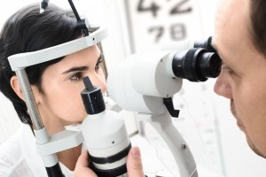

<?xml version="1.0" encoding="UTF-8"?><rss version="2.0"
	xmlns:content="http://purl.org/rss/1.0/modules/content/"
	xmlns:wfw="http://wellformedweb.org/CommentAPI/"
	xmlns:dc="http://purl.org/dc/elements/1.1/"
	xmlns:atom="http://www.w3.org/2005/Atom"
	xmlns:sy="http://purl.org/rss/1.0/modules/syndication/"
	xmlns:slash="http://purl.org/rss/1.0/modules/slash/"
	>

<channel>
	<title>optometrist &#8211; Optometrist in Annapolis</title>
	<atom:link href="http://annapolis.eyefitvisioncenters.com/eyeglasses/Maryland/optometrist/feed/" rel="self" type="application/rss+xml" />
	<link>http://annapolis.eyefitvisioncenters.com/eyeglasses</link>
	<description>eye doctor &#124; eye exam &#124; eyeglasses frames</description>
	<lastBuildDate>Fri, 25 Mar 2016 18:25:12 +0000</lastBuildDate>
	<language>en-US</language>
	<sy:updatePeriod>hourly</sy:updatePeriod>
	<sy:updateFrequency>1</sy:updateFrequency>
	
	<item>
		<title>Annapolis Optometrist</title>
		<link>http://annapolis.eyefitvisioncenters.com/eyeglasses/annapolis-optometrist-3/</link>
		<pubDate>Fri, 25 Mar 2016 18:25:12 +0000</pubDate>
		<dc:creator><![CDATA[pjdhanoa]]></dc:creator>
				<category><![CDATA[Optometrist]]></category>
		<category><![CDATA[annapolis]]></category>
		<category><![CDATA[comprehensive exams]]></category>
		<category><![CDATA[eye health]]></category>
		<category><![CDATA[optometrist]]></category>
		<category><![CDATA[pediatric optometrist]]></category>
		<category><![CDATA[vision damage]]></category>

		<guid isPermaLink="false">http://annapolis.eyefitvisioncenters.com/eyeglasses/?p=66</guid>
		<description><![CDATA[Optometry in Annapolis Just how often do you see your eye doctor? How often do you think about your eye health? In general, it is widely recommended the people of all ages see their eye doctor at least once a year, and eye health to keep your eye health as well as your general well-being [&#8230;]]]></description>
				<content:encoded><![CDATA[<h1 style="text-align: justify;"><a href="http://eyefitvisioncenters.com">Optometry in Annapolis</a></h1>
<div id="attachment_30" style="width: 310px" class="wp-caption alignleft"><a href="../../../wp-content/uploads/2015/07/11394288_m.jpg" rel="attachment wp-att-30"></a><p class="wp-caption-text">Annapolis optometrist</p></div>
<p style="text-align: justify;">Just how often do you see your eye doctor? How often do you think about your eye health? In general, it is widely recommended the people of all ages see their eye doctor at least once a year, and eye health to keep your eye health as well as your general well-being in mind all the time. It helps to pay attention to any signs or symptoms as balls recent developments in order to determine when you should see any kind of physician or specialist, but it is just as helpful to see a variety of different healthcare providers are at the year in order to have comprehensive exams and testing completed regardless. This is especially true for children who are still growing and developing and a considerable great. This is why kids should really see a pediatric optometrist from the time that they are about six months old, so if you are in the market for an <a href="http://eyefitvisioncenters.com">Annapolis optometrist</a> that can provide your child with the care that they need, then you need only visit us here at EyeFit Vision Centers.</p>
<p style="text-align: justify;">A child&#8217;s eyes are first examined upon exiting the birth canal for any initial sorts of deformities or developmental issues. These sorts of problems can be addressed at the hospital, but kids will continue to grow at a relatively rapid rate throughout their entire childhood. This is why it is widely recommended that children begin to see pediatric optometrist regularly from the time that they are about six months old. Because kids are still growing, it is important that you have a specialist exam in their eyes and the mechanics that control them in order to look out for any developmental issues, deformities, or any other signs of vision impairment. Vision impairments that involve eyesight disabilities, such as common ones like nearsightedness or farsightedness, or rather common and are easily treated with the use of prescription lenses, but there are a series of much more serious eye related conditions and disease that can also develop as well. These sorts of conditions can create lifelong effects, even irreversible side effects such as vision damage or loss. In order to prevent these things from happening, it is helpful to have your child see a pediatric optometrist at least once a year for a comprehensive exam. Our Annapolis optometrist here at EyeFit Vision Centers can help ensure that your child&#8217;s vision and overall eye health are in check.</p>
<p style="text-align: justify;">Eye exams, as well as a variety of other checkups and doctor visits, are especially important for children since they are still developing, but diseases and conditions can still occur in adults as well. That is why routine checkups are recommended for people of all ages, but if you happen to be looking for in <a href="http://eyefitvisioncenters.com">Annapolis optometrist</a> that can provide your child pediatric care that they need, then you can visit us here at EyeFit Vision Centers and get complete eye care for the whole family.</p>
<h3 style="text-align: justify;"><a href="http://eyefitvisioncenters.com">2321 Forest Drive</a><br />
<a href="http://eyefitvisioncenters.com">Annapolis, MD 21401</a><br />
<a href="http://eyefitvisioncenters.com">(410) 266-3369</a></h3>
]]></content:encoded>
			</item>
		<item>
		<title>Annapolis Optometrist</title>
		<link>http://annapolis.eyefitvisioncenters.com/eyeglasses/annapolis-optometrist-2/</link>
		<pubDate>Mon, 29 Feb 2016 16:02:06 +0000</pubDate>
		<dc:creator><![CDATA[pjdhanoa]]></dc:creator>
				<category><![CDATA[Optometrist]]></category>
		<category><![CDATA[annapolis]]></category>
		<category><![CDATA[eye care]]></category>
		<category><![CDATA[eye health]]></category>
		<category><![CDATA[first eye exam]]></category>
		<category><![CDATA[optimal vision]]></category>
		<category><![CDATA[optometrist]]></category>

		<guid isPermaLink="false">http://annapolis.eyefitvisioncenters.com/eyeglasses/?p=63</guid>
		<description><![CDATA[Eye care in Annapolis Comprehensive eye exams are essential in the diagnosis and treatment of your child’s vision problems, injuries, and diseases. Early detection allows for treatment to begin before the child experiences difficulty in school due to poor vision, or before any permanent damage has been done to the eye(s). At our Annapolis optometry [&#8230;]]]></description>
				<content:encoded><![CDATA[<h1 style="text-align: justify;"><a href="http://eyefitvisioncenters.com">Eye care in Annapolis</a></h1>
<div id="attachment_64" style="width: 310px" class="wp-caption alignleft"><a href="../../../wp-content/uploads/2016/02/6351780_xl.jpg" rel="attachment wp-att-64"></a><p class="wp-caption-text">Annapolis optometrist</p></div>
<p style="text-align: justify;">Comprehensive eye exams are essential in the diagnosis and treatment of your child’s vision problems, injuries, and diseases. Early detection allows for treatment to begin before the child experiences difficulty in school due to poor vision, or before any permanent damage has been done to the eye(s). At our <a href="http://eyefitvisioncenters.com">Annapolis optometry</a> office of EyeFit Vision Centers, we strive to provide the highest quality of care so that your child can achieve optimal vision and eye health that does not affect their school work or other everyday activities. We focus on kid-friendly eye exams along with medical and surgical treatment for our littlest patients.</p>
<p style="text-align: justify;">Eye examinations for children are especially important as five to ten percent of preschoolers and 25 percent of school-aged children have vision problems. The American Optometric Association (AOA) recommends that infants have their first eye exam at six months of age. Children should be re-examined at age three, and again just before they enter the first grade. Scheduling your child’s eye exam is crucial as many basic skills required in a child’s learning are associated with good eyesight, such as near and distance vision, binocular (two eyes) coordination, peripheral awareness, and hand-eye coordination. The AOA suggests that children who do not require vision correction should receive an eye exam every two years. Otherwise, children who do wear corrective lenses should have their vision evaluated annually. Comprehensive exams also test visual acuity, eye tracking and focusing skills, as well as detect problems such as nearsightedness, farsightedness, amblyopia, crossed eyes, dyslexia, and color blindness. Our team of caring Annapolis optometrists will also check for eye disease during your child’s eye exam, as well as assess how their eyes work together, and evaluate their eyes as an indicator of their overall health. Our office offers state of the art diagnostic equipment, including retinal photography and visual field testing.</p>
<p style="text-align: justify;">At the <a href="http://eyefitvisioncenters.com">Annapolis optometry</a> office of EyeFit Vision Centers, our mission is to preserve, restore, and enhance the vision of every member of your family. We are particularly inclined to treat those littler patients, as establishing good eye health early can deter further complications with their eyes and overall optical health. Please call our office today if you have any questions regarding pediatric eye exams, or if you would like to schedule an appointment.</p>
<h3 style="text-align: justify;"><a href="http://eyefitvisioncenters.com">2321 Forest Drive</a><br />
<a href="http://eyefitvisioncenters.com">Annapolis, MD 21401</a><br />
<a href="http://eyefitvisioncenters.com">(410) 266-3369</a></h3>
]]></content:encoded>
			</item>
		<item>
		<title>Sunglasses in Annapolis</title>
		<link>http://annapolis.eyefitvisioncenters.com/eyeglasses/sunglasses-in-annapolis/</link>
		<pubDate>Wed, 27 Jan 2016 19:53:42 +0000</pubDate>
		<dc:creator><![CDATA[pjdhanoa]]></dc:creator>
				<category><![CDATA[Uncategorized]]></category>
		<category><![CDATA[annapolis]]></category>
		<category><![CDATA[frame expert]]></category>
		<category><![CDATA[lens options]]></category>
		<category><![CDATA[optician]]></category>
		<category><![CDATA[optometrist]]></category>
		<category><![CDATA[Sunglasses]]></category>

		<guid isPermaLink="false">http://annapolis.eyefitvisioncenters.com/eyeglasses/?p=59</guid>
		<description><![CDATA[Annapolis Optometry Do you wear sunglasses in the fall and winter months? If not, you should. Today doctors are talking about the importance of wearing sunscreen year round to protect your skin from the sun’s harmful rays. Many facial cosmetics even contain sunscreen to protect your face and lips throughout the year. It is just [&#8230;]]]></description>
				<content:encoded><![CDATA[<h1 style="text-align: justify;"><a href="http://eyefitvisioncenters.com">Annapolis Optometry</a></h1>
<div id="attachment_60" style="width: 210px" class="wp-caption alignleft"><a href="../../../wp-content/uploads/2016/01/9998471_xl.jpg" rel="attachment wp-att-60"></a><p class="wp-caption-text">Sunglasses in Annapolis</p></div>
<p style="text-align: justify;">Do you wear sunglasses in the fall and winter months? If not, you should. Today doctors are talking about the importance of wearing sunscreen year round to protect your skin from the sun’s harmful rays. Many facial cosmetics even contain sunscreen to protect your face and lips throughout the year. It is just as important to wear sunglasses for UV protection for your eyes, even during the fall and winter month. If you want to get new <a href="http://eyefitvisioncenters.com">sunglasses in Annapolis</a>, you will be very excited to see our large selection at EyeFit Vision Centers.</p>
<p style="text-align: justify;">When you come to our vision practice and optical boutique, our frame experts and opticians will be able to help you get the right kind of sunglasses that will provide UV protection. Our optometrist is Dr. Deborah Amoroso. There are different kinds of sunglasses lenses available, but not all provide this type of protection for the eyes. It is important to get sunglasses in Annapolis that block out 100% of the sun’s UVA and UVB rays in order for your eyes to be fully protected. Overexposure to these rays can cause many different eye problems down the road, including cataracts. When you are getting regular eyeglasses, there are also lens options that will eliminate UV exposure. Our optometrist, optician or frame expert will be able to give you additional information about these lens options.</p>
<p style="text-align: justify;">Of course, you also want your <a href="http://eyefitvisioncenters.com">sunglasses in Annapolis</a> to be stylish and fashionable. For this reason we offer a wide selection of sunglasses for you to choose from. Our frame experts will be happy to help you find sunglasses that compliment your face shape and fashion sense. Sunglasses also have different colored lenses that may perform additional functions. Our knowledgeable experts will be happy to let you know more about the sunglasses you are thinking about purchasing, to make sure they are as functional as you would like for them to be. If you would like to get prescription sunglasses, you can make an appointment to see our optometrist for a new lens prescription. Patients enjoy the convenience of our one-stop-shopping optical center which allows them to get new eyeglass prescriptions, and then select great frames from the very same location. For an appointment with our optometrist contact us today. To only get a new eyeglass frame or pair of sunglasses, no appointment is ever necessary.</p>
<h3 style="text-align: justify;"><a href="http://eyefitvisioncenters.com">2321 Forest Drive</a><br />
<a href="http://eyefitvisioncenters.com">Annapolis, MD 21401</a><br />
<a href="http://eyefitvisioncenters.com">(410) 266-3369</a></h3>
]]></content:encoded>
			</item>
		<item>
		<title>Annapolis Optometrist</title>
		<link>http://annapolis.eyefitvisioncenters.com/eyeglasses/annapolis-optometrist/</link>
		<pubDate>Tue, 21 Jul 2015 14:43:02 +0000</pubDate>
		<dc:creator><![CDATA[pjdhanoa]]></dc:creator>
				<category><![CDATA[Optometrist]]></category>
		<category><![CDATA[annapolis]]></category>
		<category><![CDATA[contact lens exam]]></category>
		<category><![CDATA[eyeglass prescription]]></category>
		<category><![CDATA[great eye care]]></category>
		<category><![CDATA[optometrist]]></category>

		<guid isPermaLink="false">http://annapolis.eyefitvisioncenters.com/eyeglasses/?p=29</guid>
		<description><![CDATA[Eye doctor in Annapolis Have you been looking for an optometrist who you can trust to provide great eye care for all members of your family? If so, you can stop searching now. If you need the services of a highly-trained and expert optometrist to provide great eye care, make an appointment to visit us [&#8230;]]]></description>
				<content:encoded><![CDATA[<h1 style="text-align: justify;"><a href="../../../../index.html">Eye doctor in Annapolis</a></h1>
<div id="attachment_30" style="width: 310px" class="wp-caption alignleft"><a href="../../../wp-content/uploads/2015/07/11394288_m.jpg"></a><p class="wp-caption-text">Annapolis optometrist</p></div>
<p style="text-align: justify;">Have you been looking for an optometrist who you can trust to provide great eye care for all members of your family? If so, you can stop searching now. If you need the services of a highly-trained and expert optometrist to provide great eye care, make an appointment to visit us at EyeFit Vision Centers. You will be very happy with the eye care you receive from our <a href="../../../../index.html">Annapolis optometrist</a>.</p>
<p style="text-align: justify;">At EyeFit Vision Centers, we make sure that all of our optometrists are skilled doctors in the field of optometric medicine. And all of our optometrists enjoy working with their patients, and providing the finest care available in the field today. Our Annapolis optometrist will provide you with a comprehensive eye exam or complete contact lens exam. Our optometrists will make sure that the eyeglass frames you select will work well with your eyeglass prescription to provide you with the best vision possible.</p>
<p style="text-align: justify;">When you visit our <a href="../../../../index.html">Annapolis optometrist</a> at EyeFit Vision Centers, you will be thrilled with the level of care you receive. Our optometrists practice at the highest level of licensure and are also able to prescribe any medicines that might be needed to treat eye problems. They may also suggest to you some vitamins you can take to help keep your eyes healthy. At EyeFit Vision Centers we also train our eyewear professionals to have the highest degree of knowledge and ability that we have come to expect from our experts. Our optometrists and eyewear professionals then work together to make sure that your entire eye care experience is at the highest level possible, from examinations all the way through walking out our door with your great new pair of eyeglasses. Our state-of-the-art centers use the latest technology to provide the highest level and quality of eye exams, as well as product solutions. Our state-of-the-art technology ensures that our doctors are able to provide the most accurate and efficient eye exams for you; you will be able to be 100% confident that their diagnosis is correct and that the examination has been thorough. If you would like to have an exam with one of our great optometrists, contact us today for an appointment at EyeFit Vision Centers.</p>
<h3 style="text-align: justify;"><a href="../../../../index.html">2321 Forest Drive</a><br />
<a href="../../../../index.html">Annapolis, MD 21401</a><br />
<a href="../../../../index.html">Phone:</a><a href="http://eyefitvisioncenters.com">(410) 266-3369</a></h3>
]]></content:encoded>
			</item>
		<item>
		<title>Annapolis Optometry Vision Center </title>
		<link>http://annapolis.eyefitvisioncenters.com/eyeglasses/annapolis-optometry-vision-center/</link>
		<pubDate>Sat, 23 May 2015 13:07:24 +0000</pubDate>
		<dc:creator><![CDATA[pjdhanoa]]></dc:creator>
				<category><![CDATA[Optometry Vision Center ]]></category>
		<category><![CDATA[annapolis]]></category>
		<category><![CDATA[eye care]]></category>
		<category><![CDATA[eye doctor]]></category>
		<category><![CDATA[optician]]></category>
		<category><![CDATA[optometrist]]></category>
		<category><![CDATA[vision]]></category>

		<guid isPermaLink="false">http://annapolis.eyefitvisioncenters.com/eyeglasses/?p=26</guid>
		<description><![CDATA[Contact Lenses in Annapolis Here at EyeFit Vision Centers, the number one Annapolis optometry vision center, contact lenses are by far some of our most popular products. Contact lenses are so popular because they are so versatile and available in so many forms, so that they can cater to a wide range of patients’ needs and [&#8230;]]]></description>
				<content:encoded><![CDATA[<h1><a href="http://eyefitvisioncenters.com">Contact Lenses in Annapolis</a></h1>
<div id="attachment_27" style="width: 310px" class="wp-caption alignleft"><a href="../../../wp-content/uploads/2015/06/12417187_xl.jpg"></a><p class="wp-caption-text">Annapolis Optometry Vision Center</p></div>
<p>Here at EyeFit Vision Centers, the number one <a href="../../../../index.html">Annapolis optometry vision center</a>, contact lenses are by far some of our most popular products. Contact lenses are so popular because they are so versatile and available in so many forms, so that they can cater to a wide range of patients’ needs and special interests. Here at EyeFit Vision Centers, we make sure that finding the contact lenses you need at our <a href="../../../../index.html">Annapolis optometry vision center</a> is as easy and convenient as it can be. The first step to getting contact lenses, whether it is your first time using them or you have used them for years, is to schedule a contact lens exam. Contact lens exams are crucial when it comes to making sure that your optical prescription for your lenses is accurate, as well as determining the proper measurements for your contact lenses so that they are fitted properly and they are comfortable for you to wear. Contact lens exams are similar to regular eye exams, they simply require a few extra steps related to your contact lenses and so may take a little while longer. It is important to come in to our <a href="../../../../index.html">Annapolis optometry vision center</a> for a contact lens exam once a year so that we can check on your prescription and make changes as they are needed. If it is your first time using contact lenses, after your exam we will try different lenses with you and show you how to use them so that you end up with the perfect lenses for your needs, and so that you feel confident using them and taking care of them each day.</p>
<p>If you would like to learn more about our contact lens selection, or any of the other many eye care products and services available to you here at our <a href="../../../../index.html">Annapolis optometry vision center</a>, we highly recommend that you visit the main EyeFit Vision Centers website to browse through some additional, detailed information that you might find useful. If you have any specific questions or concerns that we can assist you with in any way, please do not hesitate to contact the staff here directly at your convenience. You can reach us either by phone or online.</p>
<h3>Dr. Deborah Amoroso, O.D.<br />
2321 Forest Drive<br />
Annapolis, MD 21401<br />
Phone:410.266.3369</h3>
]]></content:encoded>
			</item>
		<item>
		<title>Eye Exams in Annapolis</title>
		<link>http://annapolis.eyefitvisioncenters.com/eyeglasses/eye-exams-in-annapolis/</link>
		<pubDate>Fri, 17 Apr 2015 17:59:43 +0000</pubDate>
		<dc:creator><![CDATA[pjdhanoa]]></dc:creator>
				<category><![CDATA[Annapolis]]></category>
		<category><![CDATA[Eye Doctor]]></category>
		<category><![CDATA[Optometrist]]></category>
		<category><![CDATA[Uncategorized]]></category>
		<category><![CDATA[annapolis]]></category>
		<category><![CDATA[Eye Exams]]></category>
		<category><![CDATA[optometrist]]></category>

		<guid isPermaLink="false">http://annapolis.eyefitvisioncenters.com/eyeglasses/?p=23</guid>
		<description><![CDATA[Annapolis Optometrist Here at EyeFit Vision Centers, our eye exams in Annapolis are some of our most important services offered. They may seem simple, but that does not take away how crucial eye exams are to maintaining good eye health, and good health in general. Many people do not realize that your eyes are more [&#8230;]]]></description>
				<content:encoded><![CDATA[<h1><a href="../../../../index.html">Annapolis Optometrist</a></h1>
<div id="attachment_24" style="width: 310px" class="wp-caption alignleft"><a href="../../../wp-content/uploads/2015/04/841472_l.jpg"></a><p class="wp-caption-text">Eye Exams in Annapolis</p></div>
<p>Here at EyeFit Vision Centers, our <a href="../../../../index.html">eye exams in Annapolis</a> are some of our most important services offered. They may seem simple, but that does not take away how crucial eye exams are to maintaining good eye health, and good health in general. Many people do not realize that your eyes are more than just the “windows to your soul,” as the saying goes, and that they too are the windows to the health of other areas of your body. Symptoms in your eyes and vision can be indicative of a wide range of health issues, including and excluding specifically eye and vision-related problems. In addition, it is important to visit us for eye exams in Annapolis due to the nature in which most eye problems develop: slowly. Many potentially serious eye conditions develop so gradually that it can be difficult to notice the subtle changes that occur in your vision or eye health as a result. The danger of this is that many people are unaware that they have a problem until the symptoms have built up and already done real damage. In order to avoid this, it is best to visit us for eye exams in Annapolis at a frequency recommended by the professionals here at EyeFit Vision Centers. When you choose to get your <a href="../../../../index.html">eye exams in Annapolis</a> with us, you can trust that you will get the fullest evaluation of your eye and vision health thanks to our expert eye care professionals, our state-of-the-art facility, and the reliable and informative testing methods that we use. We also offer a wide range of additional eye care services that we can recommend as they are needed.</p>
<p>If you would like to learn more about what our <a href="../../../../index.html">eye exams in Annapolis</a> entail, or if you are interested in reading up on any of the other various eye care services and products available to you here at EyeFit Vision centers, we highly recommend that you visit our practice’s main informative website, which contains a wealth of detailed information that could prove useful to you. If you have any remaining questions or concerns that we can address, please feel free to contact the staff here directly.</p>
<aside id="text-2" class="widget widget_text">
<div class="textwidget">
<h2><a href="../../../../index.html">Eye Testing in Annapolis</a><br />
2321 Forest Drive<br />
Annapolis, MD 21401<br />
Phone: 410.266.3369</h2>
</div>
</aside>
]]></content:encoded>
			</item>
		<item>
		<title>Eye Doctor Annapolis</title>
		<link>http://annapolis.eyefitvisioncenters.com/eyeglasses/eye-doctor-annapolis/</link>
		<pubDate>Mon, 23 Feb 2015 22:42:48 +0000</pubDate>
		<dc:creator><![CDATA[pjdhanoa]]></dc:creator>
				<category><![CDATA[Annapolis]]></category>
		<category><![CDATA[Eye Doctor]]></category>
		<category><![CDATA[Optometrist]]></category>
		<category><![CDATA[annapolis]]></category>
		<category><![CDATA[eye doctor]]></category>
		<category><![CDATA[eye exam]]></category>
		<category><![CDATA[optometrist]]></category>

		<guid isPermaLink="false">http://annapolis.eyefitvisioncenters.com/eyeglasses/?p=20</guid>
		<description><![CDATA[Annapolis Best Optometrist At EyeFit Vision Center of of Annapolis, our focus is on you. We get to know your lifestyle, preferences and overall health so that we can tailor your examination and eyewear.  Fashionable or funky? Function versus form? We have what you need. Come see for yourself. It’s about time someone reframed eye [&#8230;]]]></description>
				<content:encoded><![CDATA[<h1>Annapolis Best Optometrist</h1>
<p>At EyeFit Vision Center of of Annapolis, our focus is on you. We get to know your lifestyle, preferences and overall health so that we can tailor your examination and <a title="Eye Doctor Annapolis" href="../../../../index.html">eyewear</a>.  Fashionable or funky? Function versus form? We have what you need. Come see for yourself. It’s about time someone reframed eye care.</p>
<h3>Dr. Deborah Amoroso, O.D.</h3>
<p></p>
<p>Having such a positive contact lens appointment opened Dr. Amoroso’s eyes to a career in optometry.</p>
<p>“Improving someone’s quality of life through their vision is a really great feeling,” says Dr. Amoroso. “Seeing a patient happy after they have an exam is my favorite part of the job.”</p>
<p>Dr. Amoroso graduated Magna Cum Laude from Cedar Crest College in Allentown, Pennsylvania before going on to the Ohio State College of Optometry. After school, she went on to work as a primary eye care doctor in Maine, South Carolina and Georgia before joining the EyeFit team.</p>
]]></content:encoded>
			</item>
	</channel>
</rss>

<!-- Dynamic page generated in 0.312 seconds. -->
<!-- Cached page generated by WP-Super-Cache on 2016-04-09 16:35:53 -->

<!-- Localized -->